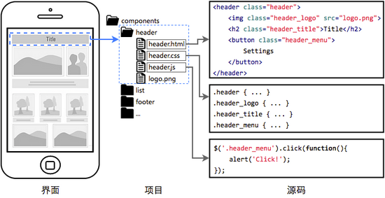

浅谈前端工程化及项目实践
擅长：h5、javascript、nodejs
主讲内容
- 传统前端开发迭代过程中会遇到的问题
- 工程化要解决的问题
- 内部项目实践
代码难以维护
- 缺少统一的编码规范，不同项目、不同人的代码风格不一。
- 变量命名随意，var a,one,kkk;做不到变量名自解释，注释稀少，不通读代码难以理解变量名和函数功能。
- 每个项目各自一套自己的css,甚至reset样式都不统一，UI有新需求时每个开发人员维护自己的一套样式，遇到的bug每个人重复解决一次，新老css难以拆分，css体积增大。
- 页面相同功能的部分，每个项目对应的开发人员各自实现相同的功能，缺少公共业务组件。
项目难以维护
- 有用npm管理第三方依赖包，npm install后项目运行不了，缺少依赖包。胡乱使用第三方库、组件，文件会导致页面加载大量无用代码
- 页面关系错综复杂，需求迭代易出bug。
- 静态资源不断增加。
部署难以维护
- 没有版本号、内容指纹的概念，无法长期缓存及精确控制缓存内容。
- 覆盖式发布，升级不够平滑。
可能发生一些工程问题
- 代码编写、调试困难
- 业务代码不好维护
- 网站性能不好
- 发现bug不好修复。
工程化要解决的问题?
- 合理的开发流程及开发规范，包括代码规范、模块化组件化规范(分治)等（提高生产力）
- 一套自动化代码构建方案
- 一套自动化 发布／部署 方案
开发
- 1.组件化开发。整个webapp由各个组件构成，一个组件的Js、CSS和HTML维护在一起，尽量松耦合。（react+es6+less编写组件）
- 模块化开发。Js模块化，CSS模块化，HTML模块化，所有资源都是模块，并采取就近引入原则，哪里用哪里引，同时要做到防止资源重复引入。
- 文件实时监听、浏览器自动刷新。
- 依赖包管理，版本控制。
- 规范编码。推荐JS：Airbnb eslint规范 css: BEM命名规范
构建
- 可以编译中间语言。比如支持Stylus、Less、Typescript等的编译。
- 支持Js、CSS的压缩和混肴。
- 允许图片压缩后以base64编码形式嵌入到CSS、Js或HTML中。
- 支持代码按需加载。将代码根据页面需求进行分割与合并，优化Http请求数。
部署
- 根据代码内容生成版本号，实现缓存控制，提示访问性能。
- 支持第三方类库的Js、CSS与自己所写的代码分离。

- 页面上的每个独立的 可视/可交互区域视为一个组件;
- 每个组件对应一个工程目录，组件所需的各种资源都在这个目录下就近维护;
- 每个组件相对独立，页面作为组件的容器，组件自由组合形成功能完整的界面;
- 当不需要某个组件，或者想要替换组件时，可以整个目录删除/替换。
app组件系统：
es6+react.js+less作为主要技术栈
- cbdUI基础组件库：基础UI组件。
- Cbd业务组件库：包含不同项目相同功能的业务组件
cbd命令行工具
- 主要用于专题的cbd命令行工具
- 类型项目的脚手架初始化
- 自动化工具（编译、压缩、hash指纹、热加载）
- 代码发布
服务端打包发布系统
前端：reactjs + 后端：nodejs+mongodb
- 支持自定义添加hook脚本
- 拉取代码仓库对应版本，编译、发布至指定目录
- 发布日志